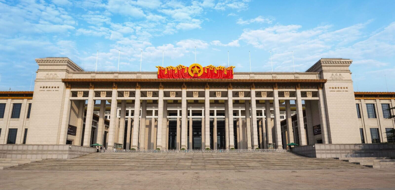

Museum nasional Tiongkok
Museum Nasional Tiongkok
lokasi di Museum Nasional TiongKok
Didirikan:
2003; 20 tahun lalu
Lokasi:
Beijing
jenis:
Museum Seni, Museum Sejarah
Koleksi:
1,3 Jt
Wisatawan:
1,6 Jt (2022)
Direktur: Wang Chunfa
Pemilik: Kementerian Kebudayaan dan Pariwisata Republik Rakyat Tiongkok
Akses transportasi umum:
Situs Web:
Situs Resmi Museum Nasional TiongkokMuseum Nasional Tiongkok (Hanzi: 中国国家博物馆; Pinyin: Zhōngguó guójiā bówùguǎn) berada di Adimarga Chang'an Timur No. 16, Distrik Dongcheng, di bagian timur Lapangan Tiananmen, Beijing, Tiongkok. Tujuan museum ini adalah untuk edukasi mengenai seni dan sejarah Tiongkok. Dengan total luas bangunan hampir 200.000 meter persegi, memiliki lebih dari 1,3 juta koleksi dan 48 ruang pameran, menjadikannya sebagai museum terbesar di dunia berdasarkan luas bangunan tunggal dan merupakan salah satu museum dengan koleksi peninggalan budaya Tiongkok terkaya. Museum Nasional Tiongkok di bawah naungan Kementerian Kebudayaan dan Pariwisata Republik Rakyat Tiongkok.
SEJARAH
Bangunan megah bernama Museum Nasional Tiongkok dibangun pada tahun 2003 dengan bantuan arsitek dari Jerman. Gedung baru ini merupakan bangunan baru yang menggabungkan dua unit bangunan terpisah yang sebelumnya sudah ada sejak tahun 1959 yakni Museum Revolusi Tiongkok di sisi utara dan Museum Nasional Sejarah Tiongkok di sisi selatan.
Museum Revolusi Tiongkok yang mulai dibangun pada tahun 1950-an dulunya berisi rekaman sejarah Revolusi Tiongkok tahun 1949. Sedangkan Museum Nasional Sejarah Tiongkok dibangun sejak tahun 1912 berisi artefak-artefak sejarah Tiongkok. Proyek penggabungan kedua unit museum ini dimulai pada April 2007 dan rampung pada 1 Maret 2010, dengan menelan biaya sebesar 2,5 miliar yuan.
Museum Nasional Tiongkok pada malam hari, January 2021
BANGUNAN
Museum Nasional Tiongkok memiliki empat lantai berisi aneka dokumen sejarah peradaban dan kisah perjuangan politik Tiongkok. Rentetan panjang kisah sejarah politik Tiongkok terpajang apik melalui pameran lukisan-lukisan berformat besar dengan tokoh utamanya yakni Ketua Mao Zedong.
Di lantai-lantai atas, terpajang aneka benda-benda seni kuno era pemerintahan kekaisaran sampai zaman modern yang sering terjadi aksi tukar-menukar cendera mata antara para pemimpin Tiongkok dengan delegasi tingkat tinggi asing yang tengah bertandang ke ibu kota Beijing.
Gallery
benang emas pada masa Dinasti Han
Jambangan porselen dihiasi kapur berwarna dari zaman Kaisar Qianlong, Dinasti Qing
.jpg)